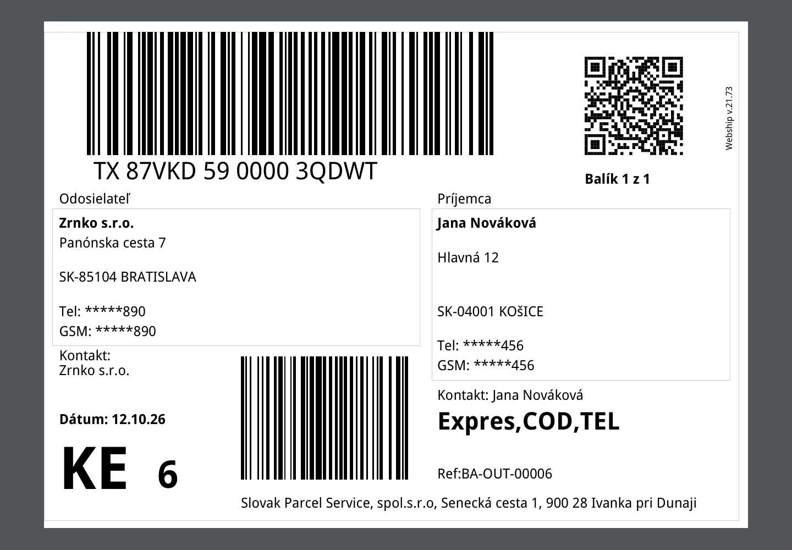

Ship when you validate the delivery
- Validating a delivery creates the Neoship shipment and attaches the label PDF to the chatter.
- The weight comes from Weight for shipping, the product weights or the method's default weight, converted to kilograms.
- The delivery shows the tracking number, the Neoship status and one row per parcel.
- Download Label Again reprints the same shipment; Send to Shipper retries after a correction.
- Missing recipient data is reported before Neoship is called, and Neoship errors are shown with readable field names.

